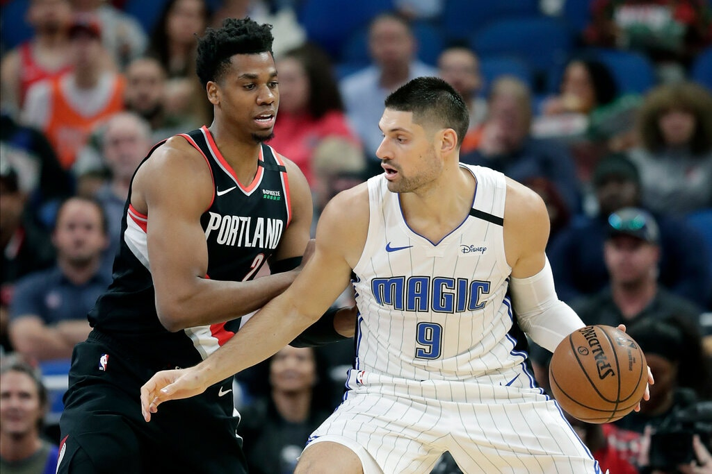
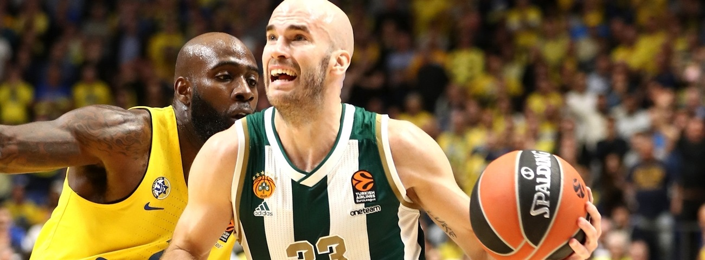

The N.B.A. Bubble Is in the Magic’s Backyard. But They’re Not Quite at Home.
With their homes, family and friends minutes away, Orlando players feel conflicted as they resume their season in quarantine at Walt Disney World.
The Orlando Magic’s Nikola Vucevic, right, posting up Portland’s Hassan Whiteside in March. Vucevic had his wife bring a video game he wanted to a designated drop-off zone at the N.B.A. “bubble.”Credit...John Raoux/Associated Press
LAKE BUENA VISTA, Fla. — The Orlando Magic used two buses to keep a 35-person traveling party well spread out on the 23-mile journey that made them the first team to enter the N.B.A.’s restricted campus environment on July 7.
Though there were far more pressing concerns on such a momentous ride, Orlando’s Nikola Vucevic had another date circled on his internal calendar: July 10. That was the release date for the 2020 edition of the F1 video game.
“I’m a big Formula One fan,” Vucevic said.
So big, in fact, that Vucevic packed his preferred portable steering wheel for the short trip from the Magic’s arena, Amway Center, to the Grand Floridian Resort & Spa at Walt Disney World, which is hosting N.B.A. teams as the league reboots its suspended season. Vucevic was determined to be well-equipped for down time on an assignment that will last well into August — or longer if Orlando goes beyond the first round of the playoffs.
Vucevic has also benefited from the one true perk of proximity: Magic players can ask family and friends to drop off items at an external hub that handles mail and delivery shipments for all teams.

FC Barcelona lands All-EuroLeague playmaker Calathes
One of the best point guards in Turkish Airlines EuroLeague history switched powerhouses with FC Barcelona signing
Nick Calathes to a three-year deal. Calathes (1.96 meters, 31 years old) arrives from Panathinaikos OPAP Athens,
where he played eight seasons over two periods - from 2009 to 2012 and 2015 until now. In his first stint with
Panathinaikos, Calathes helped the Greens win the EuroLeague in 2011. More recently, Calathes was chosen to the All-EuroLeague First Team for both the 2017-18 and 2018-19 campaigns.